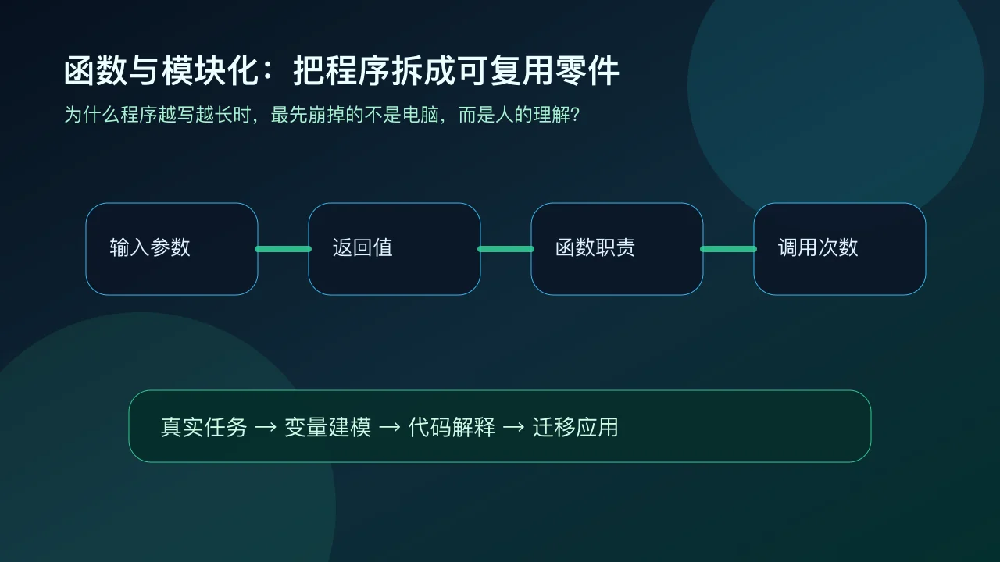
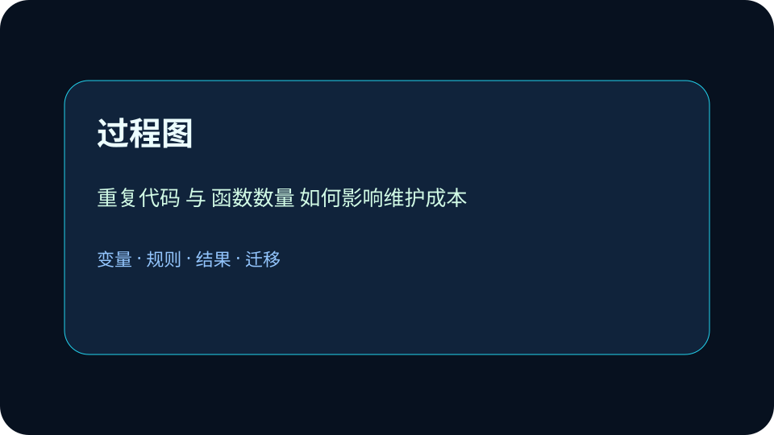

Application
应用场景：把抽象概念放回可验证的真实任务。
真实应用：把概念迁移到校园系统
函数像自动售货机：投入参数，机器内部处理，吐出返回值。 请把本课方法迁移到一个新的校园场景：选课、借书、门禁或成绩查询。你的方案至少写出三个部分：数据从哪里来，规则如何处理，结果怎样被检查。如果发现结果异常，要能回到变量和规则重新诊断。
为什么程序越写越长时，最先崩掉的不是电脑，而是人的理解？

已经知道：你见过程序代码，也知道计算机能自动处理数据。
但问题是：真实系统不是背语法，而是把现实任务抽象成变量、规则、结构和结果。学习时要把每个词都落到可观察数据上，避免只会背术语。
所以学：班级成绩系统从算平均分扩展到排名、等级、导出报告，一坨代码很快没人敢改。
选择后，AI 学伴会围绕你的卡点给提示。
一个好函数最应该具备哪种特点？
规范定义：函数是指完成特定任务的代码单元；模块化是把复杂程序拆成职责清晰、可组合的部分。
机制解释：先识别重复任务，再定义输入输出，最后用函数名隐藏内部细节。模块之间通过接口协作。
掌握一种程序设计语言的基本知识，使用程序设计语言实现简单算法。
依据解决问题的需要，设计和表示简单算法；掌握一种程序设计语言的基本知识，利用程序设计语言实现简单算法，解决实际问题。
创设程序设计的活动情境，组织学生在解决问题的过程中探究顺序结构、选择结构和循环结构的特点。
题目给了什么输入和现象？
变量、规则、结构分别是什么？
为什么这个规则会产生该结果？
换一个场景还能不能用？
函数像自动售货机：投入参数，机器内部处理，最后吐出返回值。
调整重复代码和函数数量，观察维护成本。请用“变量、规则、结果”三句话解释。
拖动滑块后，写出变量如何影响结果。
函数什么都做，既读输入又改全局变量还打印结果，导致无法复用和测试。
只看表面语法，没检查前提和数据流。
先问变量是什么，再问规则是否成立。
第一步，识别输入变量，例如“重复代码”和“函数数量”。第二步，写出处理规则，说明程序如何把输入转化成“维护成本”。第三步，用一个具体数据检验结果是否合理。这样做的好处是：答案不再只是背概念，而是能解释为什么这个算法或结构在当前情境中成立。

函数像自动售货机：投入参数，机器内部处理，吐出返回值。 请把本课方法迁移到一个新的校园场景：选课、借书、门禁或成绩查询。你的方案至少写出三个部分：数据从哪里来，规则如何处理，结果怎样被检查。如果发现结果异常，要能回到变量和规则重新诊断。
不要根据题目里的表面词汇机械套用。先看数据是否有多个取值，再看规则是否需要选择，最后看任务是否要重复处理一批对象。若变量、规则、结果三者能互相解释，这个程序模型才是可验证的；若只能说出一个名词，就说明理解还停留在表层。 进一步检查时，请把自己的答案拆成“输入是什么、判断依据是什么、输出如何验证”三句话；如果三句话中任意一句说不清，就回到变量和规则重新修改。
调试不是随便改代码，而是回到输入、规则和输出三处检查。先固定输入，看输出是否稳定；再改变一个变量，观察结果是否符合规则；最后解释异常来自数据、条件还是流程。这个步骤能帮助你把“会运行”提升为“会解释”。 进一步检查时，请把自己的答案拆成“输入是什么、判断依据是什么、输出如何验证”三句话；如果三句话中任意一句说不清，就回到变量和规则重新修改。
一个合格答案不能只写概念名称。你要能说明：哪些数据被输入，哪个规则被调用，结果如何产生，怎样检查是否合理。用这四个问题检查自己的方案，就能把零散术语转化为解决真实问题的算法表达。 进一步检查时，请把自己的答案拆成“输入是什么、判断依据是什么、输出如何验证”三句话；如果三句话中任意一句说不清，就回到变量和规则重新修改。
视频回顾本课主线：真实场景、概念定义、变量模型、迁移应用。
只要记住定义，就一定能解决真实程序任务。这个说法对吗？
把“计算成绩等级并生成提示语”拆成两个函数，写出输入和输出。
提交后会检查是否包含变量、规则和结果。
说出本课一个定义。
分析一个校园系统变量。
设计并验证一个方案。
一个完整答案最应该包含什么？
函数是编程中的基本构建块，用于封装可重复使用的代码。想象你每天早晨的例行公事：刷牙、洗脸、吃早餐。如果每次都要重新描述这些步骤会很麻烦，而函数就像把这些步骤打包成一个‘早晨准备’的快捷方式。在Python中，定义函数的语法是`def 函数名(参数):`。例如，计算圆面积的函数可以写成`def circle_area(radius): return 3.14 * radius ** 2`。调用时只需写`circle_area(5)`就能得到半径为5的圆面积。函数让代码更整洁，避免重复，也便于修改。
函数通过参数接收输入，通过返回值输出结果。参数就像点餐时的选项：你可以要汉堡（一个参数），或汉堡加薯条（多个参数）。返回值则是你最终拿到手的餐点。例如，一个计算BMI的函数可能这样定义：`def calculate_bmi(weight, height): return weight / (height ** 2)`。调用时`calculate_bmi(70, 1.75)`会返回计算结果。没有return语句的函数默认返回None。参数可以有默认值，如`def greet(name='访客'):`，这样调用`greet()`时会使用默认值。理解参数传递是掌握函数的关键。
变量的作用域决定了它在哪部分代码中可见。全局变量在整个程序中可用，而局部变量只在定义它的函数内有效。这就像学校里的规则：校规（全局）适用于所有人，班规（局部）只在本班有效。例如：
```python
x = 10 # 全局变量
def func():
y = 5 # 局部变量
print(x + y) # 可以访问全局x
func()
print(y) # 报错，y不存在
```
若要在函数内修改全局变量，需用`global`声明。理解作用域能避免变量名冲突和意外修改。
模块化是将大型程序分解为小型、独立、可复用部件的过程。就像乐高积木，小块组合能建成复杂结构。在编程中，一个文件过于庞大时（比如超过200行），就该考虑拆分。模块化带来三大优势：1) 可维护性 - 修复bug只需关注特定模块；2) 可复用性 - 如数学计算模块可在多个项目中重复使用；3) 协作性 - 多人可同时开发不同模块。Python中，每个.py文件都是一个模块。例如，把所有的图形计算函数放在`graphics.py`中，其他文件通过`import graphics`来使用。
创建Python模块只需三步：1) 在新.py文件中编写函数/变量；2) 保存为有意义的名字（如`utilities.py`）；3) 在其他文件中用`import`语句引入。例如，创建`converter.py`：
```python
# converter.py
def celsius_to_fahrenheit(c):
return c * 9/5 + 32
```
使用时：
```python
import converter
print(converter.celsius_to_fahrenheit(37))
```
可以用`from converter import *`直接引入所有函数，但建议用`import module`形式以避免命名冲突。模块搜索路径包括当前目录和Python安装路径。
Python自带丰富的标准库模块，无需安装即可使用。`math`提供数学函数（如`math.sqrt()`）；`random`用于生成随机数；`datetime`处理日期时间。例如，用`datetime`显示当前时间：
```python
from datetime import datetime
now = datetime.now()
print(f'现在是{now.hour}点{now.minute}分')
```
`os`模块与操作系统交互，如`os.listdir()`列出目录内容。`json`模块解析JSON数据。这些模块就像瑞士军刀的各种工具，熟悉它们能极大提升编码效率。建议浏览Python官方文档了解全部标准库模块。
除了标准库，Python生态有数十万个第三方模块，通过pip安装。例如数据分析常用的`pandas`，用`pip install pandas`安装。安装后使用方式与标准库相同：
```python
import pandas as pd
data = pd.read_csv('data.csv')
```
著名的第三方模块还有：`numpy`（科学计算）、`requests`（网络请求）、`matplotlib`（绘图）等。虚拟环境（venv）可以隔离不同项目的依赖。注意：1) 只从官方PyPI仓库安装；2) 检查模块维护情况；3) 生产环境固定版本号（如`pandas==1.3.5`）。
优秀的模块化编程遵循以下原则：1) 单一职责 - 每个模块/函数只做一件事；2) 低耦合 - 模块间尽量减少依赖；3) 高内聚 - 相关功能放在同一模块。例如，电商项目可能拆分为：`user.py`（用户管理）、`product.py`（商品）、`order.py`（订单）等。每个模块应有清晰的文档字符串：
```python
"""
order.py - 处理订单相关功能
Functions:
create_order(): 创建新订单
cancel_order(): 取消订单
"""
测试应针对模块单独进行。随着项目增长，可将相关模块组织为包（含`__init__.py`的目录）。
['1. 你之前写过哪些Python函数？它们有什么共同特点？', '2. 如果一段代码需要在多个地方使用，直接复制粘贴有什么问题？', '3. 你用过哪些Python标准库模块？它们解决了什么问题？']
['1. 编写一个函数，接收列表并返回去掉重复元素的新列表', '2. 解释为什么这段代码会报错：\n```python\ndef add(a, b):\n sum = a + b\nprint(add(3, 5))\n```', '3. 如果要开发一个天气查询程序，你会设计哪些模块？每个模块负责什么？']
['错因1：认为函数必须要有return语句。实际上无return的函数返回None', '误区2：过度使用全局变量，导致难以追踪的副作用', '诊断3：模块划分不合理，要么过于零碎（一个函数一个模块），要么过于庞大（所有功能挤在一个文件）']
设计一个学生成绩管理系统，要求：1) 分析需要哪些核心模块；2) 说明模块间如何交互；3) 为每个模块编写至少一个函数原型。考虑成绩录入、统计、查询等功能如何模块化实现。